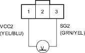
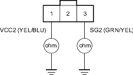
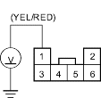

- Disconnect the TPS (throttle position sensor) connector.
- Turn the ignition switch ON (II).
- Measure the voltage between the No. 1 and No. 3 terminals of the TPS connector.
TPS CONNECTOR

Wire side of female terminals
Is there about 5 V?
YES - Check for an open or a short in the wire between PCM connector terminal A15 and the TPS. If wire is OK, replace the TPS. 
NO - Go to step 20.
- Turn the ignition switch OFF.
- Disconnect PCM connector A (31P).
- Check for continuity between the No. 1 terminal of TPS connector and body ground and between the No. 3 terminal and body ground.
TPS CONNECTOR

Wire side of female terminals
Is there continuity?
YES - Check for a short to ground in the wires between the No. 1 and No. 3 terminals of TPS connector and ground. If the wires are OK, replace the PCM.
NO - Go to step 23.
- Reconnect the PCM connector A (31P) and TPS connector.
- Disconnect the shift lock solenoid/D3 switch connector.
- Turn the ignition switch ON (II).
- Press the brake pedal and measure the voltage between No. 1 terminal of the shift lock solenoid/D3 switch connector and body ground.
SHIFT LOCK SOLENOID/D3 SWITCH CONNECTOR

Wire side of female terminals
Is there battery voltage when pressing the brake pedal?
YES - Go to step 27.
NO - Repair open or short in the wire between the No. 1 terminal of the shift lock solenoid/D3 switch connector and the multiplex control unit.